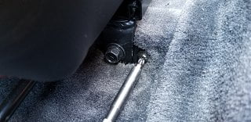
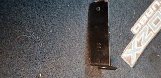

-
Has anyone investigated adding floor mat hooks to their Z31 on the driver's side? I have 2 sets of mats and they both tend to slide up the firewall. I did some searching today and this looks like it could work.
https://smile.amazon.com/Eagle-Klaw-…N58BWSPZ05302T
There are many carpet grip strips out there, but it's hard to tell if any will work with our carpet without buying a bunch and testing.
I wish I could design a hook that goes on the driver's seat front mounting bolts and holds the mat that way.
Any ideas that I may have not thought about yet?
-
My plan is to pull them from a junkyard car at the pick-n-pull. Probably pretty easy to find in a newer honda or toyota.
Should be easy to install, cheap and OEM quality..

84 AE/Shiro #683/Shiro #820/84 Turbo -
That's a good point. I should go poke around and see which ones are the easiest to remove and transfer. Then I suppose you can get a cheap grommet tool for the mats.Originally posted by Z_Karma View Post -
Thanks for sharing. Never heard of foor mat hooks before. -
May not be oem looking but a hidden bit of safty wire through the matt and around the seat bolt has worked for decades for me.Who needs new car's, Nissan had it right 30 years ago!!! -
I did hit up a salvage yard and got a couple of bar style ones from Honda Civics. But in getting them home, the floor section that the seats bolt to are smaller than the Honda ones, so it doesn't look like you can effectively bolt them to that raised floor section. I'm going to get ones that go through the carpeting next and see if that style would be a better option.Last edited by Reds89; 12-18-2018, 02:19 AM. -
Did some more salvage yard runs this last weekend. So what I found is 01 and 02 Honda Accords with cloth seats have a single bar style floor mat bracket which is the longest one I've seen on Honda's. I brought several home from the Accord and Civic, and the longer Accord one seems to work best. I ended up grabbing 4 of the longer style Accord brackets. Some of them have the "S84" stamped on the bottom, while others have no stamping.
The Z31 front seat bolts have an extra screw on each side that these brackets will mount to. Just drill out the screw hole on the brackets to 1/4". I'm having a local upholstery shop install grommets on my floor mats today, so I'll do final fitting soon.
 Last edited by Reds89; 12-21-2018, 03:52 AM. -
Update: Got the mats back. The grommet size was a little too big, and I thought they were going to be black anodized, but oh well.
20181220_092340.jpg
Due to the curvature of the floor by the transmission tunnel, the mats will slip out of the bar hooks, especially on the inside one. I think the perfect solution is going to be a hook style which hooks back toward the driver, which is common on most newer cars. My 18 Murano has this type, they're plastic and puncture through the carpet.
fullsizeoutput_e9f.jpeg
As a quick fix, I remembered I had some right angled vacuum caps in my toolbox. They have just enough "hook" to hold the drivers mat in place. After driving to downtown LA and back 3+ hours total driving, they did hold. Looks silly, but for the moment, it seems they'll do until I figure out the solution.
20181220_161346.jpg
This is the goal: Keeping the mat out from behind the gas pedal
20181220_093720.jpgLast edited by Reds89; 12-21-2018, 03:55 AM. -
@mwolvinm It is original carpet, I'm the 2nd owner of the car, that's why. My rear hatch area carpet has shrunk though, but that is very common with these cars anyways. If you do buy aftermarket carpet, it may be better than what you have, but you'll have to do some trimming to make it fit. It will never be 100% as good as the factory carpet. Maybe you could remove your carpet and have it cleaned?Comment
-
Amazing. I'm really impressed at how well your carpet has held up. Unfortunately, my carpet has an 8" tear in the driver well-- most likely due to not using the floor mats. The floor mats are still present, but *surprise* ride up under the gas pedal.... so they are on a shelf in the workshop. I might just have to secure them somehow.
-

Copyright © 2006–. All rights reserved. Privacy Policy
Comment